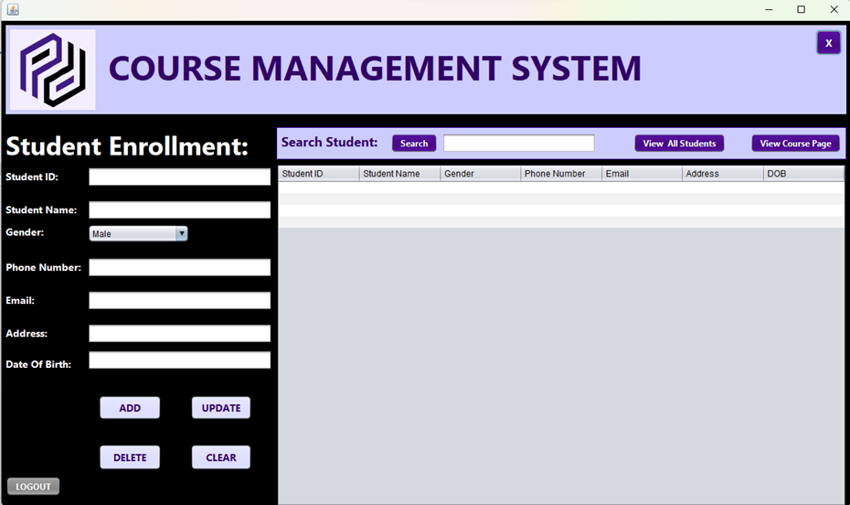
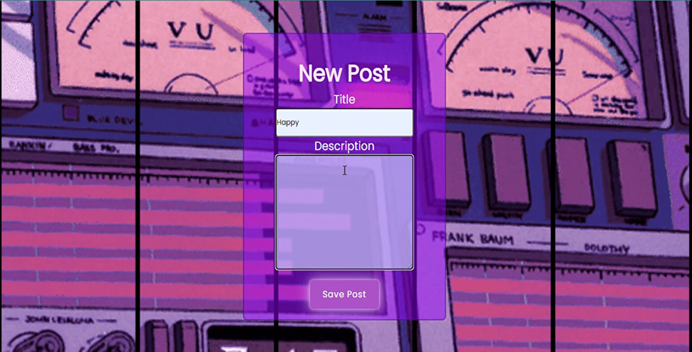
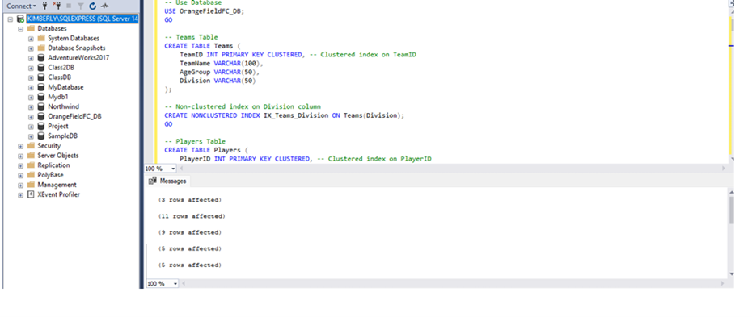

Hi, My Name is Kimberly!
Welcome To My Website!
"Creating with passion, coding with purpose"
About
I am a dedicated IT student at Belgium Campus iTversity, where I am deeply engaged in learning about the latest advancements in technology and software development. My coursework has equipped me with a strong foundation in programming, network security, and data management. I am particularly passionate about problem-solving and leveraging technology to create innovative solutions. Through various projects and practical experiences, I have developed skills in coding languages such as Java, Python, and C++, as well as familiarity with database management and cybersecurity protocols. Outside of academics, I am an enthusiastic team player who enjoys collaborating on tech projects and participating in coding challenges. My goal is to contribute to cutting-edge technological advancements and drive meaningful change in the IT industry.
Skills
- C#
- Java
- Python
- JavaScript
- Ruby on Rails
- Node Red
- OpenProject
- SQL Server Management Studio
- Leadership
- Critical thinking
- Attention to detail
- Time management
- Microsoft Access
- Microsoft Excel
- Microsoft Word
- PowerPoint
- Power Bi Desktop
- Power Bi Report Builder
- Scratch
- MySQL
- HTML
- Decision making
- Communication
Portfolio
Java
(Photographic Proof of Project)
I developed a Course Management System using Java, JDBC, and Swing, featuring course creation and student enrollment with a user-friendly GUI. Key achievements include designing a MySQL database schema, implementing CRUD operations, and creating a GUI with Java Swing. Ensured data integrity through input validation and exception handling, demonstrating skills in Java, database management, and GUI development.
Ruby on Rails
(Photographic Proof of Project)
I developed a movie blog application using Ruby on Rails as part of a group project. Key features I worked on include secure user authentication, post management for creating and editing posts, a comment system, user profiles, search functionality, pagination, and authorization controls. This project demonstrated my skills in web development and enhancing user experience.
(To access my projects please contact Belgium Campus)
SSMS
(Photographic Proof of Project)
I participated in a group project crafting a robust database solution for OrangeField Football Club. Together, we designed and implemented logical and physical database structures using SQL Server Management Studio (SSMS). My role encompassed conceptual design, normalization, stored procedures, views, and queries. This collaborative effort showcased my adeptness in database management and effective teamwork.
Contact Me
You can reach me at:
Email: kimberlykaronga2@gmail.com
Phone: 073-033-9023
LinkedIn: www.linkedin.com/in/kimberly-karonga